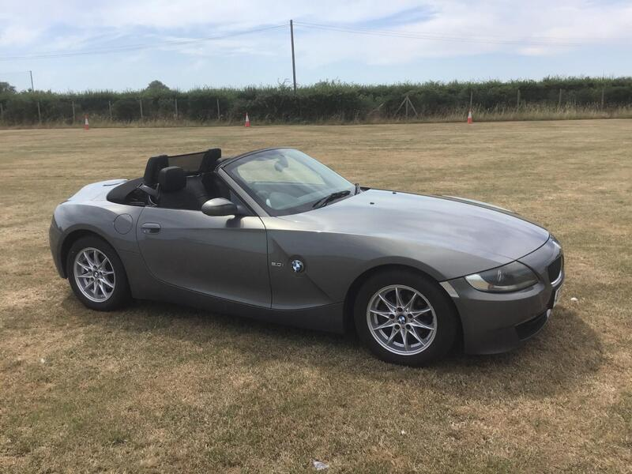
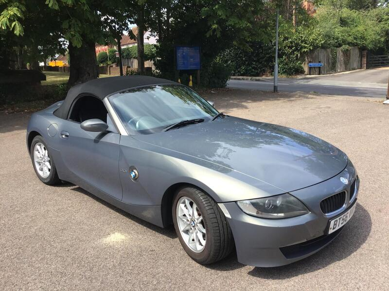
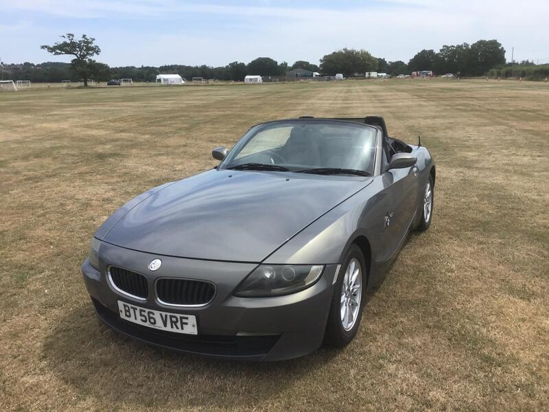
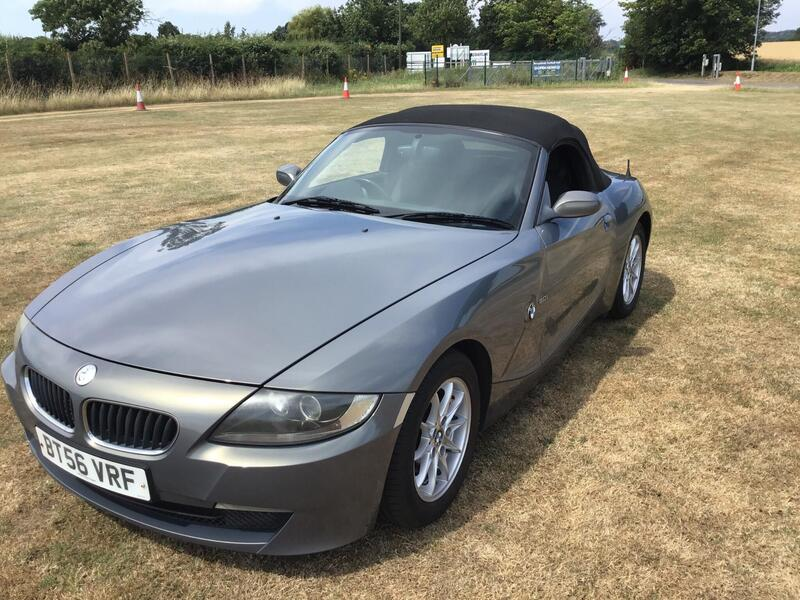

Seller photos from the AutoTrader ad.
BMW Z4 2.0i SE
High miles but long, loving ownership. A cheap, low-rust Z4.
Key facts
| Price | £1,800 |
|---|---|
| Year | 2006 |
| Miles | 142,185 |
| Model | BMW Z4 2.0i SE |
| Colour | Grey |
| Registration | 2006 (56 reg) |
| Owners | 4 owners |
| Service history | Not stated |
| MOT | ~10 months (ad) |
| Seller | Private |
| Location | Billericay |
| From GU7 | 54 mi (AutoTrader) |
| Checked | 13 Oct 2026 |
Why buy it
- Same owner for 10 years, BMW-specialist serviced (ad)
- Fresh oil and filters, new rocker cover gasket (ad)
Things to check
142k miles
Check the roof motor and drain, plus the cooling plastics
- BMW Z4 E85 weak spots
Body resists rot well; rear brake lines corrode; occasional rear-arch blisters. Roof motor flooded by a blocked drain (dealer ~€1,200–1,500, specialist €200–400); cooling plastics (expansion tank, thermostat, water pump).
Seller says (extract)
“Z4 I have owned this car for the last 10 years and it has never let me down. I am only selling as I have started a family and need a four door car now. It has been serviced by an excellent local independent garage who specialises in BMW. It comes with two keys, has 10 months MOT and has just had the oil and filters changed and the rocker cover gasket replaced. The rear tyres are nearly new and the front ones have loads of tread left. The sun roof is working perfectly and in good condition with no leaks. The bodywork is in excellent condition considering its age and mileage. A test drive with me will be no problem. If you want to drive it I will require proof of insurance or full payment before you can drive.…”